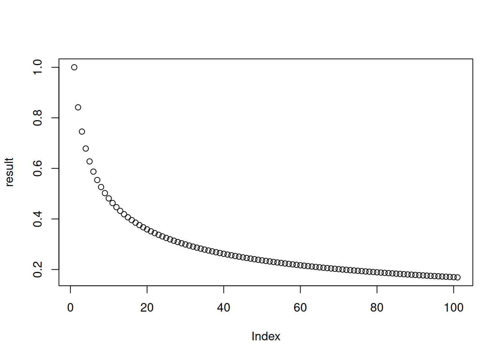
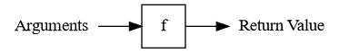

path <- "test.csv"
if (endsWith(path, ".csv")) {
message("This is a CSV file.")
# data <- read.csv(path)
# ...
}This is a CSV file.This lesson provides an introduction to core programming concepts: control flow structures (including loops) and functions.
After this lesson, you should be able to:
Control flow structures are computer programming commands that change the order in which code runs (the flow of control in the program). Specifically, control flow structures can check conditions, such as the value of a variable, to decide what code to run next. They can also run a section of code more than once.
The sections that follow provide examples of how to use the most common R control structures.
For complete documentation on control flow structures in R, see the Control Flow chapter in Advanced R. You can also get more details from the R control flow help page:
?ControlSometimes you might need R to make decisions about what to do next as your code runs. For example, suppose you want to load a collection of data files, some of which are CSV files and some of which are TSV files. You can tell which is which by each file name’s suffix (.csv versus .tsv), but need to call read.csv for the CSV files and read.table for the TSV files. One way to do this is with an if-expression, which tells R to run a block of code only if a particular condition is satisfied.
An if-expression begins with the keyword if, then has a condition in parentheses ( ), and finally has a block of code to run if the condition is satisified in curly braces { }:
if (condition) {
# Code to run if the condition is TRUE.
}The condition must be some R code that returns a single logical (TRUE or FALSE) value.
Indent code between curly braces by 2 or 4 spaces. R doesn’t require you to indent your code, but doing so will make your code easier to read.
Continuing the example, you can use the endsWith function to check whether a string ends with a specific pattern, so you can check for CSV files with this if-expression:
path <- "test.csv"
if (endsWith(path, ".csv")) {
message("This is a CSV file.")
# data <- read.csv(path)
# ...
}This is a CSV file.When this code runs, R checks the condition endsWith(path, ".csv"). If it’s TRUE, then R runs the code between the curly braces. If it’s FALSE, then R skips over all of the code between the curly braces. So if you run the code with path <- "test.csv", R will print a message, but if you run the code with path <- "test.tsv", R won’t print anything.
You can use the optional else keyword with an if-expression to tell R to run a different block of code only if the condition is not satisfied. This turns the if-expression into an if-else-expression. An if-else-expression typically looks like this:
if (condition) {
# Code to run if condition is TRUE.
} else {
# Code to run if condition is FALSE.
}Returning to the example, let’s change the if-expression so that R prints an error message and stops running (with the stop function) if the file is not a CSV file:
path <- "test.csv"
if (endsWith(path, ".csv")) {
message("This is a CSV file.")
# data <- read.csv(path)
# ...
} else {
stop("Unrecognized file format.")
}This is a CSV file.Try this code out with a few different values for path.
The else and if keywords can be combined, so you can write if-else expressions that check several different mutually exclusive conditions:
if (condition1) {
# Code to run if condition1 is TRUE.
} else if (condition2) {
# Code to run if condition2 is TRUE (and condition1 is FALSE).
} else {
# Code to run if both condition1 and condition2 are FALSE.
}Coming back to the example one last time, now we can add a case that handles TSV files:
path <- "test.csv"
if (endsWith(path, ".csv")) {
message("This is a CSV file.")
# data = read.csv(path)
# ...
} else if (endsWith(path, ".tsv")) {
message("This is a TSV file.")
# data <- read.table(path)
# ...
} else {
stop("Unrecognized file format.")
}This is a CSV file.As usual, try this code out with a few different values for path. Testing your code as you write it is a great way to prevent bugs.
The R function ifelse is similar to an if-else-expression, but operates element-by-element on vectors. The condition should be a logical vector with multiple elements. For example:
x <- c(0, 1, -1, 2)
ifelse(x <= 0, "non-positive", "positive")[1] "non-positive" "positive" "non-positive" "positive" If you only need to test a single condition, it is clearer and more efficient to use an if-else-expression than to use ifelse.
If-expressions are a fairly universal control flow structure across programming languages, setting aside minor differences in syntax.
The condition in an if-expression will often be a comparison between two variables or a variable and a value. For instance, you might want to check whether a variable is equal to a specific value.
In R, you can make comparisons with the following operators:
< for “less than”> for “greater than”<= for “less than or equal to”>= for “greater than or equal to”== for “equal to”!= for “not equal to”The “equal to” operator uses two equal signs so that R can distinguish it from =, the assignment operator.
Let’s look at a few examples:
1.5 < 3[1] TRUE"a" > "b"[1] FALSEpi == 3.14[1] FALSE"hi" == 'hi'[1] TRUEWhen you make a comparison, R returns a logical value (TRUE or FALSE), to indicate the result. Logical values are not the same as strings, so they are not quoted.
Logical values are values, so you can use them in other computations. For example:
TRUE[1] TRUETRUE == FALSE[1] FALSESection 4.2.2 describes more ways to use and combine logical values.
Beware that the equality operators don’t always return FALSE when you compare two different types of data:
"1" == 1[1] TRUE"TRUE" <= TRUE[1] TRUE"FALSE" <= TRUE[1] TRUEThis is due to R’s implicit coercion, which was explained in Section 3.8.2.
All of the conditions we’ve seen so far have been written in terms of a single test. If you want to use more sophisticated conditions, R provides operators to negate and combine logical vectors. These operators are useful for working with logical vectors even outside the context of indexing.
The NOT operator ! converts TRUE to FALSE and FALSE to TRUE:
x = c(TRUE, FALSE, TRUE, TRUE)
x[1] TRUE FALSE TRUE TRUE!x[1] FALSE TRUE FALSE FALSEYou can use ! with a condition:
y = c("hi", "hello")
!(y == "hi")[1] FALSE TRUEThe NOT operator is vectorized.
R also has operators for combining logical values.
The AND operator & returns TRUE only when both arguments are TRUE. Here are some examples:
FALSE & FALSE[1] FALSETRUE & FALSE[1] FALSEFALSE & TRUE[1] FALSETRUE & TRUE[1] TRUEc(TRUE, FALSE, TRUE) & c(TRUE, TRUE, FALSE)[1] TRUE FALSE FALSEThe OR operator | returns TRUE when at least one argument is TRUE. Let’s see some examples:
FALSE | FALSE[1] FALSETRUE | FALSE[1] TRUEFALSE | TRUE[1] TRUETRUE | TRUE[1] TRUEc(TRUE, FALSE) | c(TRUE, TRUE)[1] TRUE TRUEEveryday English is less precise than logic. You might say:
I want all subjects with age over 50 and all subjects that like cats.
But in logic this means:
(subject age over 50) OR (subject likes cats)
So think carefully about whether you need both conditions to be true (AND) or at least one (OR).
The AND, and OR operators are vectorized.
Rarely, you might want exactly one condition to be true. The XOR (eXclusive OR) function xor returns TRUE when exactly one argument is TRUE. For example:
xor(FALSE, FALSE)[1] FALSExor(TRUE, FALSE)[1] TRUExor(TRUE, TRUE)[1] FALSEThe second argument is irrelevant in some conditions:
FALSE & is always FALSETRUE | is always TRUENow imagine you have FALSE & long_computation(). You can save time by skipping long_computation(). A short-circuit operator does exactly that.
R has two short-circuit operators:
&& is a short-circuited &|| is a short-circuited |These operators only evaluate the second argument if it is necessary to determine the result. Here are some of these:
TRUE && FALSE[1] FALSETRUE && TRUE[1] TRUETRUE || TRUE[1] TRUEThe short-circuit operators are not vectorized—they only accept length-1 arguments:
c(TRUE, FALSE) && c(TRUE, TRUE)Error in c(TRUE, FALSE) && c(TRUE, TRUE): 'length = 2' in coercion to 'logical(1)'Because of this, you can’t use short-circuit operators for indexing. Their main use is in writing conditions for if-expressions, which we’ll learn about later on.
Prior to R 4.3.0, short-circuit operators didn’t raise an error for inputs with length greater than 1 (and thus were a common source of bugs).
R is powerful tool for automating tasks that have repetitive steps. For example, you can:
You can implement concise, efficient solutions for these kinds of tasks in R by using iteration, which means repeating a computation many times. R provides four different strategies for writing iterative code:
Vectorization is the most efficient and most concise iteration strategy, but also the least flexible, because it only works with vectorized functions and vectors. Apply functions are more flexible—they work with any function and any data structure with elements—but less efficient and less concise. Loops and recursion provide the most flexibility but are the least concise. In recent versions of R, apply functions and loops are similar in terms of efficiency. Recursion tends to be the least efficient iteration strategy in R.
The rest of this section explains how to write loops and how to choose which iteration strategy to use. We assume you’re already comfortable with vectorization and have at least some familiarity with apply functions.
A for-loop evaluates an expression once for each element of a vector or list. The for keyword creates a for-loop. The syntax is:
for (I in DATA) {
# Your code goes here
}The variable I is called an induction variable. At the beginning of each iteration, I is assigned the next element of DATA. The loop iterates once for each element, unless a keyword instructs R to exit the loop early (more about this in Section 4.3.4. As with if-statements and functions, the curly braces { } are only required if the body contains multiple lines of code. Here’s a simple for-loop:
for (i in 1:10)
message("Hi from iteration ", i)Hi from iteration 1Hi from iteration 2Hi from iteration 3Hi from iteration 4Hi from iteration 5Hi from iteration 6Hi from iteration 7Hi from iteration 8Hi from iteration 9Hi from iteration 10When some or all of the iterations in a task depend on results from prior iterations, loops tend to be the most appropriate iteration strategy. For instance, loops are a good way to implement time-based simulations or compute values in recursively defined sequences.
As a concrete example, suppose you want to compute the result of starting from the value 1 and composing the sine function 100 times:
result = 1
for (i in 1:100) {
result = sin(result)
}
result[1] 0.1688525Unlike other iteration strategies, loops don’t return a result automatically. It’s up to you to use variables to store any results you want to use later. If you want to save a result from every iteration, you can use a vector or a list indexed on the iteration number:
n = 1 + 100
result = numeric(n)
result[1] = 1
for (i in 2:n) {
result[i] = sin(result[i - 1])
}
plot(result)
Section 4.3.3 explains this in more detail.
If the iterations in a task are not dependent, it’s preferable to use vectorization or apply functions instead of a loop. Vectorization is more efficient, and apply functions are usually more concise.
In some cases, you can use vectorization to handle a task even if the iterations are dependent. For example, you can use vectorized exponentiation and the sum function to compute the sum of the cubes of many numbers:
numbers = c(10, 3, 100, -5, 2, 10)
sum(numbers^3)[1] 1001910A while-loop runs a block of code repeatedly as long as some condition is TRUE. The while keyword creates a while-loop. The syntax is:
while (CONDITION) {
# Your code goes here
}The CONDITION should be a scalar logical value or an expression that returns one. At the beginning of each iteration, R checks the CONDITION and exits the loop if it’s FALSE. As always, the curly braces { } are only required if the body contains multiple lines of code. Here’s a simple while-loop:
i = 0
while (i < 10) {
i = i + 1
message("Hello from iteration ", i)
}Hello from iteration 1Hello from iteration 2Hello from iteration 3Hello from iteration 4Hello from iteration 5Hello from iteration 6Hello from iteration 7Hello from iteration 8Hello from iteration 9Hello from iteration 10Notice that this example does the same thing as the simple for-loop in Section 4.3.1, but requires 5 lines of code instead of 2. While-loops are a generalization of for-loops, and only do the bare minimum necessary to iterate. They tend to be most useful when you don’t know how many iterations will be necessary to complete a task.
As an example, suppose you want to add up the integers in order until the total is greater than 50:
total = 0
i = 1
while (total < 50) {
total = total + i
message("i is ", i, " total is ", total)
i = i + 1
}i is 1 total is 1i is 2 total is 3i is 3 total is 6i is 4 total is 10i is 5 total is 15i is 6 total is 21i is 7 total is 28i is 8 total is 36i is 9 total is 45i is 10 total is 55total[1] 55i[1] 11Loops often produce a different result for each iteration. If you want to save more than one result, there are a few things you must do.
First, set up an index vector. The index vector should usually correspond to the positions of the elements in the data you want to process. The seq_along function returns an index vector when passed a vector or list. For instance:
numbers = c(-1, 21, 3, -8, 5)
index = seq_along(numbers)The loop will iterate over the index rather than the input, so the induction variable will track the current iteration number. On the first iteration, the induction variable will be 1, on the second it will be 2, and so on. Then you can use the induction variable and indexing to get the input for each iteration.
Second, set up an empty output vector or list. This should usually also correspond to the input, or one element longer (the extra element comes from the initial value). R has several functions for creating vectors:
logical, integer, numeric, complex, and character create an empty vector with a specific type and length
vector creates an empty vector with a specific type and length
rep creates a vector by repeating elements of some other vector
Empty vectors are filled with FALSE, 0, or "", depending on the type of the vector. Here are some examples:
logical(3)[1] FALSE FALSE FALSEnumeric(4)[1] 0 0 0 0rep(c(1, 2), 2)[1] 1 2 1 2Let’s create an empty numeric vector congruent to the numbers vector:
n = length(numbers)
result = numeric(n)As with the input, you can use the induction variable and indexing to set the output for each iteration.
Creating a vector or list in advance to store something, as we’ve just done, is called preallocation. Preallocation is extremely important for efficiency in loops. Avoid the temptation to use c or append to build up the output bit by bit in each iteration.
Finally, write the loop, making sure to get the input and set the output. As an example, this loop adds each element of numbers to a running total and squares the new running total:
for (i in index) {
prev = if (i > 1) result[i - 1] else 0
result[i] = (numbers[i] + prev)^2
}
result[1] 1.000000e+00 4.840000e+02 2.371690e+05 5.624534e+10 3.163538e+21The break keyword causes a loop to immediately exit. It only makes sense to use break inside of an if-statement.
For example, suppose you want to print each string in a vector, but stop at the first missing value. You can do this with a for-loop and the break keyword:
my_messages = c("Hi", "Hello", NA, "Goodbye")
for (msg in my_messages) {
if (is.na(msg))
break
message(msg)
}HiHelloThe next keyword causes a loop to immediately go to the next iteration. As with break, it only makes sense to use next inside of an if-statement.
Let’s modify the previous example so that missing values are skipped, but don’t cause printing to stop. Here’s the code:
for (msg in my_messages) {
if (is.na(msg))
next
message(msg)
}HiHelloGoodbyeThese keywords work with both for-loops and while-loops.
At first it may seem difficult to decide if and what kind of iteration to use. Start by thinking about whether you need to do something over and over. If you don’t, then you probably don’t need to use iteration. If you do, then try iteration strategies in this order:
Start by writing the code for just one iteration. Make sure that code works; it’s easy to test code for one iteration.
When you have one iteration working, then try using the code with an iteration strategy (you will have to make some small changes). If it doesn’t work, try to figure out which iteration is causing the problem. One way to do this is to use message to print out information. Then try to write the code for the broken iteration, get that iteration working, and repeat this whole process.
The Collatz Conjecture is a conjecture in math that was introduced in 1937 by Lothar Collatz and remains unproven today, despite being relatively easy to explain. Here’s a statement of the conjecture:
Start from any positive integer. If the integer is even, divide by 2. If the integer is odd, multiply by 3 and add 1.
If the result is not 1, repeat using the result as the new starting value.
The result will always reach 1 eventually, regardless of the starting value.
The sequences of numbers this process generates are called Collatz sequences. For instance, the Collatz sequence starting from 2 is 2, 1. The Collatz sequence starting from 12 is 12, 6, 3, 10, 5, 16, 8, 4, 2, 1.
You can use iteration to compute the Collatz sequence for a given starting value. Since each number in the sequence depends on the previous one, and since the length of the sequence varies, a while-loop is the most appropriate iteration strategy:
n = 5
i = 0
while (n != 1) {
i = i + 1
if (n %% 2 == 0) {
n = n / 2
} else {
n = 3 * n + 1
}
message(n, " ", appendLF = FALSE)
}16 8 4 2 1As of 2020, scientists have used computers to check the Collatz sequences for every number up to approximately \(2^{64}\).
For more details about the Collatz Conjecture, check out this video.
Why build code several or a hundred times when you can build it once and then call and run it as many times as you want? The answer is, don’t! A function allows you to perform an action multiple times in R by calling it and applying it in similar contexts.
For instance, if you build a function that checks the class of all vectors in a data frame, you can name this function and then apply it to do the same operation with any other data frame. Or, if you build a function that graphs the correlation between two numeric vectors and exports this graph to a .png file, you can call this same function and apply it to two other vectors, again and again as needed. Functions can greatly increase the efficiency of your programming, and allow you to create flexible and customized solutions. This section explains how you can write your own functions.
To start, let’s briefly review what functions are, and some of the jargon associated with them. It’s useful to think of functions as factories: raw materials (inputs) go in, products (outputs) come out. We can also represent this visually:

Programmers use several specific terms to describe the parts and usage of functions:
Almost every command in R is a function, even the arithmetic operators and the parentheses!
The function keyword creates a new function. Here’s the syntax:
function(parameter1, parameter2, ...) {
# Your code goes here
# The result goes here
}A function can have any number of parameters, and will automatically return the value of the last line of its body.
A function is a value, and like any other value, if you want to reuse it, you need to assign it to variable. Choosing descriptive variable names is a good habit. For functions, that means choosing a name that describes what the function does. It often makes sense to use verbs in function names.
Defining a function (with the function keyword) and calling a function are different ideas. When you define a function, R does not run the code in the body of the function. Instead, R waits to do this until you actually call the function.
Let’s write a function that gets the largest values in a vector. The inputs or arguments to the function will be the vector in question and also the number of values to get. Let’s call these vec and n, respectively. The result will be a vector of the n largest elements. Here’s one way to write the function:
get_largest = function(vec, n) {
sorted = sort(vec, decreasing = TRUE)
head(sorted, n)
}The name of the function, get_largest, describes what the function does and includes a verb. If this function will be used frequently, a shorter name, such as largest, might be preferable (compare to the head function).
Any time you write a function, the first thing you should do afterwards is test that it actually works. Let’s try the get_largest function on a few test cases:
x = c(1, 10, 20, -3)
get_largest(x, 2)[1] 20 10get_largest(x, 3)[1] 20 10 1y = c(-1, -2, -3)
get_largest(y, 2)[1] -1 -2z = c("d", "a", "t", "a", "l", "a", "b")
get_largest(z, 3)[1] "t" "l" "d"Notice that the parameters vec and n inside the function do not exist as variables outside of the function:
vecError: object 'vec' not foundIn general, R keeps parameters and variables you define inside of a function separate from variables you define outside of a function. You can read more about the specific rules for how R searches for variables in DataLab’s Intermediate R reader.
As a function for quickly summarizing data, get_largest would be more convenient if the parameter n for the number of values to return was optional (again, compare to the head function). You can make the parameter n optional by setting a default argument: an argument assigned to the parameter if no argument is assigned in the call to the function. You can use = to assign default arguments to parameters when you define a function with the function keyword. Here’s a new definition of the function with the default n = 5:
get_largest = function(vec, n = 5) {
sorted = sort(vec, decreasing = TRUE)
head(sorted, n)
}After making this change, it’s a good idea to test the function again:
get_largest(x)[1] 20 10 1 -3get_largest(y)[1] -1 -2 -3get_largest(z)[1] "t" "l" "d" "b" "a"We’ve already seen that a function will automatically return the value of its last line.
The return keyword causes a function to return a result immediately, without running any subsequent code in its body. It only makes sense to use return from inside of an if-expression. If your function doesn’t have any if-expressions, you don’t need to use return.
For example, suppose you want the get_largest function to immediately return NULL if the argument for vec is a list. Here’s the code, along with some test cases:
get_largest = function(vec, n = 5) {
if (is.list(vec))
return(NULL)
sorted = sort(vec, decreasing = TRUE)
head(sorted, n)
}
get_largest(x)[1] 20 10 1 -3get_largest(z)[1] "t" "l" "d" "b" "a"get_largest(list(1, 2))NULLAlternatively, you could make the function raise an error by calling the stop function. Whether it makes more sense to return NULL or print an error depends on how you plan to use the get_largest function.
Notice that the last line of the get_largest function still doesn’t use the return keyword. It’s idiomatic to only use return when strictly necessary.
A function returns one R object, but sometimes computations have multiple results. In that case, return the results in a vector, list, or other data structure.
For example, let’s make a function that computes the mean and median for a vector. We’ll return the results in a named list, although we could also use a named vector:
compute_mean_med = function(x) {
m1 = mean(x)
m2 = median(x)
list(mean = m1, median = m2)
}
compute_mean_med(c(1, 2, 3, 1))$mean
[1] 1.75
$median
[1] 1.5The names make the result easier to understand for the caller of the function, although they certainly aren’t required here.
You can view the body of a function by typing its name without trailing parentheses (in contrast to how you call functions). The body of a function is usually surrounded by curly braces { }, although they’re optional if the body only contains one line of code. Indenting code inside of curly braces by 2-4 spaces also helps make it visually distinct from other code.
For example, let’s look at the body of the append function, which appends a value to the end of a list or vector:
appendfunction (x, values, after = length(x))
{
lengx <- length(x)
if (!after)
c(values, x)
else if (after >= lengx)
c(x, values)
else c(x[1L:after], values, x[(after + 1L):lengx])
}
<bytecode: 0x622211a72430>
<environment: namespace:base>Don’t worry if you can’t understand everything the append function’s code does yet. It will make more sense later on, after you’ve written a few functions of your own.
Many of R’s built-in functions are not entirely written in R code. You can spot these by calls to the special .Primitive or .Internal functions in their code.
For instance, the sum function is not written in R code:
sumfunction (..., na.rm = FALSE) .Primitive("sum")Before you write a function, it’s useful to go through several steps:
Write down what you want to do, in detail. It can also help to draw a picture of what needs to happen.
Check whether there’s already a built-in function. Search online and in the R documentation.
Write the code to handle a simple case first. For data science problems, use a small dataset at this step.
Let’s apply this in one final example: a function that detects leap years. A year is a leap year if either of these conditions is true:
That means the years 2004 and 2000 are leap years, but the year 2200 is not. Here’s the code and a few test cases:
# If year is divisible by 4 and not 100 -> leap
# If year is divisible by 400 -> leap
year = 2004
is_leap = function(year) {
if (year %% 4 == 0 & year %% 100 != 0) {
leap = TRUE
} else if (year %% 400 == 0) {
leap = TRUE
} else {
leap = FALSE
}
leap
}
is_leap(400)[1] TRUEis_leap(1997)[1] FALSEFunctions are the building blocks for solving larger problems. Take a divide-and-conquer approach, breaking large problems into smaller steps. Use a short function for each step. This approach makes it easier to: